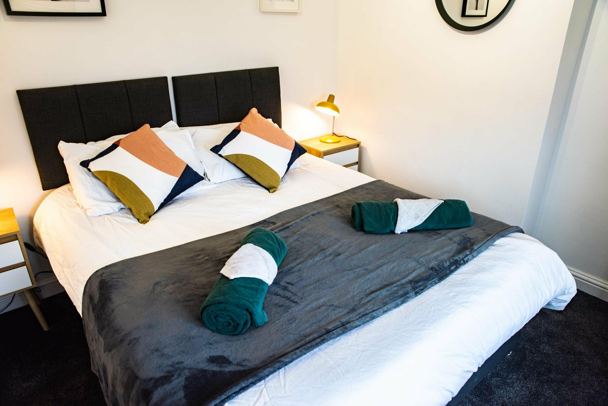
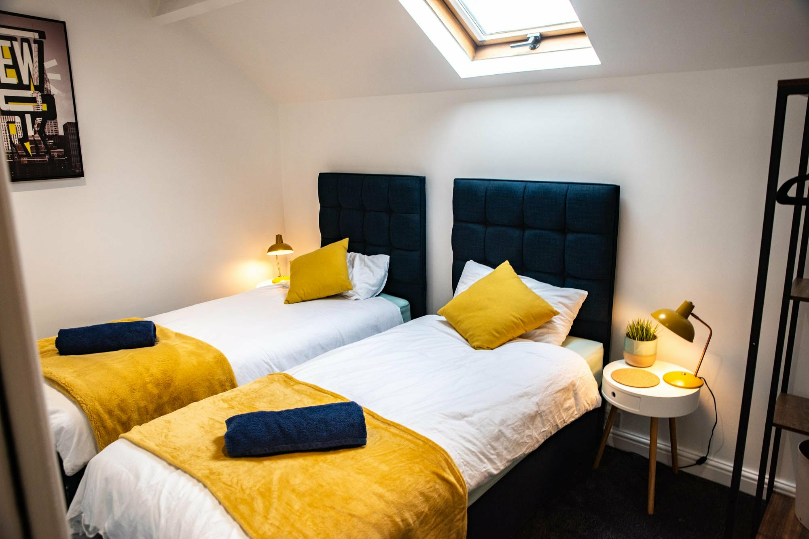
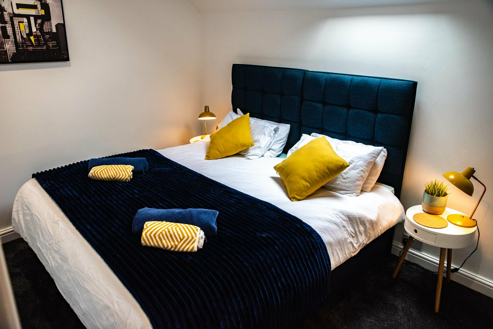
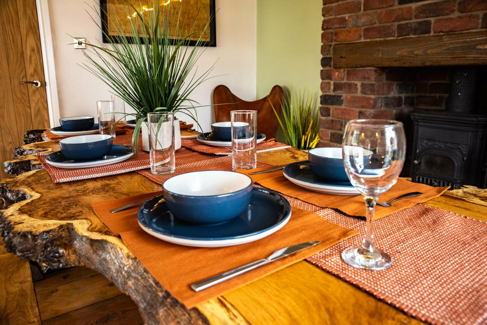
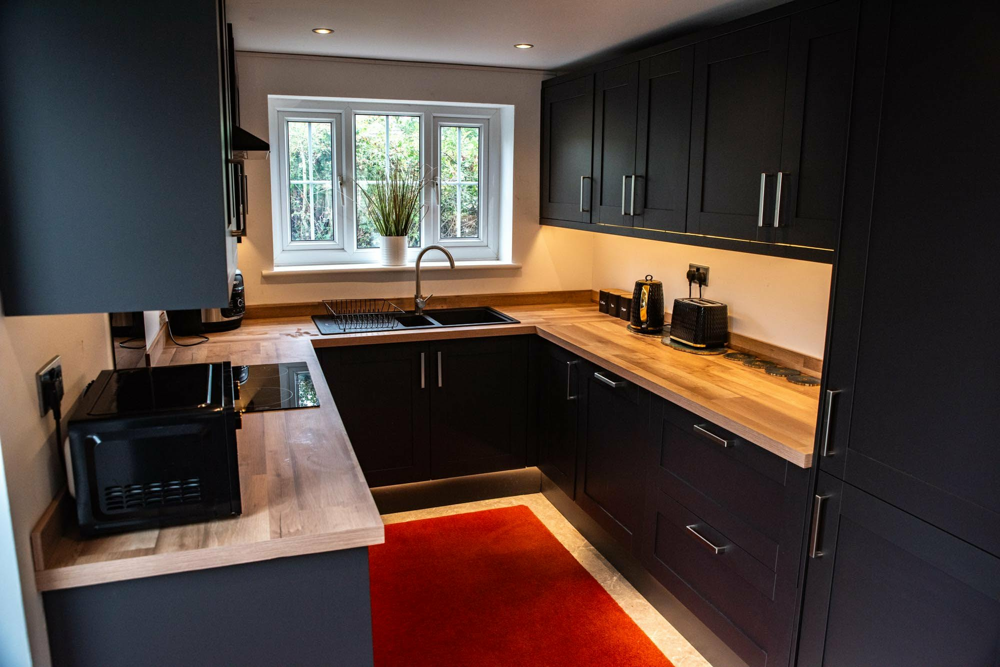

Stainforth, Doncaster - from £182/night
Stainforth 5 Bedroom House Sleeps 10
A large Doncaster-area house for families, groups and contractor teams who need proper space. This Stainforth property sleeps up to 10 guests, has five bedrooms, three bathrooms, a pool table and a large free parking area for multiple cars or vans.



Property facts
Large house to rent in Stainforth, Doncaster
This is the biggest CHJB Short Stays property and the one to look at when the search is for space first: a five-bedroom house, up to 10 guests, three bathrooms and parking that works for groups arriving in more than one vehicle.
Photos
Bedrooms and shared spaces for bigger groups
The page keeps the important photo signals on your own domain so guests researching a large Doncaster house do not have to leave for Airbnb before they know whether the property fits.


Who it suits
For larger families, work teams and group stays
The useful thing about a large serviced house is that it keeps everyone together without forcing the whole stay into separate hotel rooms. Guests can cook, sit together, work online, organise vehicles and keep normal routines during a Doncaster visit.
For contractor teams, the Stainforth location is practical for M18 routes, Hatfield, Thorne and Doncaster-area project work. For families and groups, the house gives more privacy than a hotel and more shared space than a small apartment.
Location
Stainforth, Doncaster base with road access
Stainforth works well for guests who need the Doncaster area without being tied to the city centre. It is especially useful for contractor and family stays where parking, road links and whole-house space matter more than a hotel lobby.
M18 routes
Useful for guests travelling around Doncaster, Hatfield, Thorne and nearby work locations.
Large parking setup
The booking listing describes free on-site parking with a coded gate for multiple cars or vans.
Direct booking
Use the property-specific booking link to check live dates, rules and the current price before reserving.
Property FAQs
Questions about the Stainforth sleeps 10 house
How many people can the Stainforth 5 bedroom house sleep?
The property sleeps up to 10 guests, based on the current CHJB Short Stays booking listing.
Does the house have parking?
Yes. The listing describes a large free parking area and free on-site parking with a coded gate for multiple cars or vans.
Is there a pool table?
Yes. The Stainforth sleeps 10 property is listed with a pool table, making it useful for group downtime.
How do I book this exact property?
Use the property-specific direct booking button on this page. It goes straight to the Stainforth sleeps 10 booking page rather than the general search page.
Is it suitable for contractor teams?
Yes. The size, parking and Stainforth location make it a strong option for contractors and project teams working around Doncaster.
Check the Stainforth sleeps 10 dates
Open the direct booking calendar for this property to see live availability and the current nightly price.
Check availability for this property